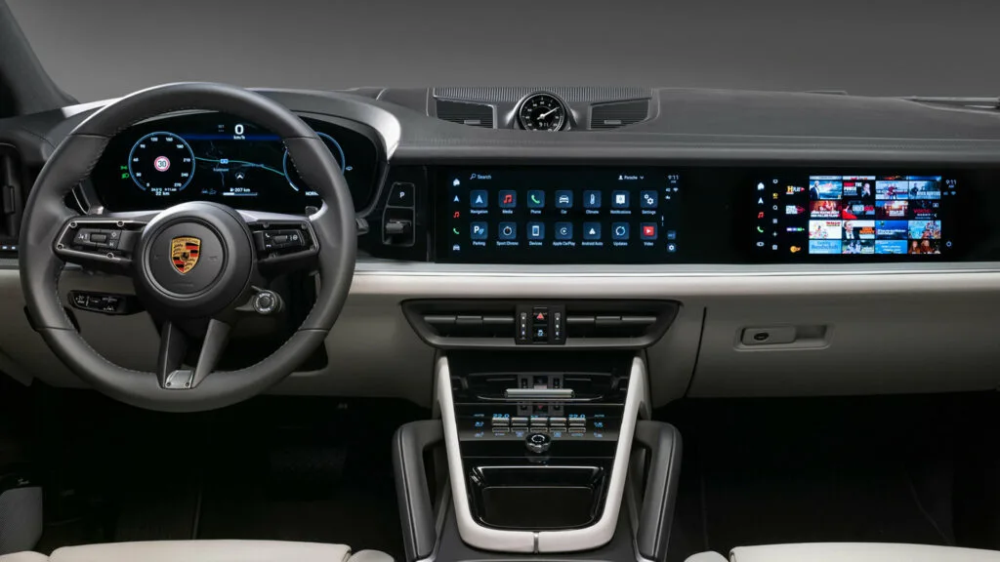
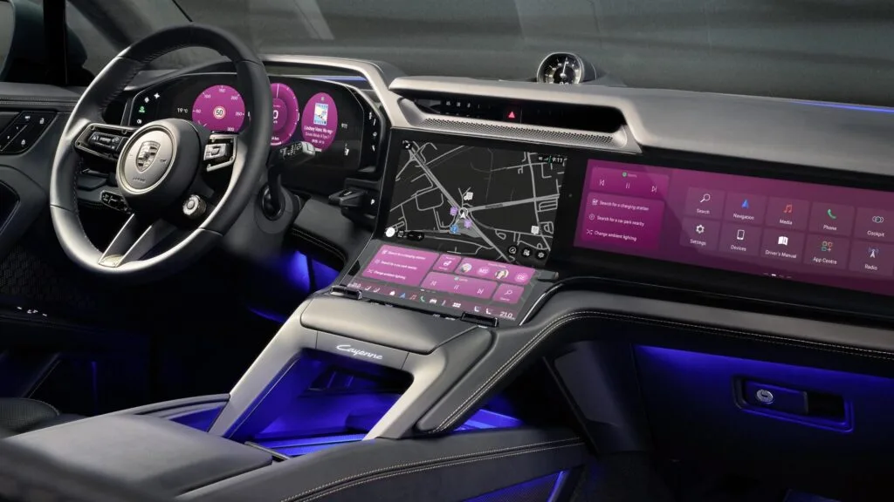
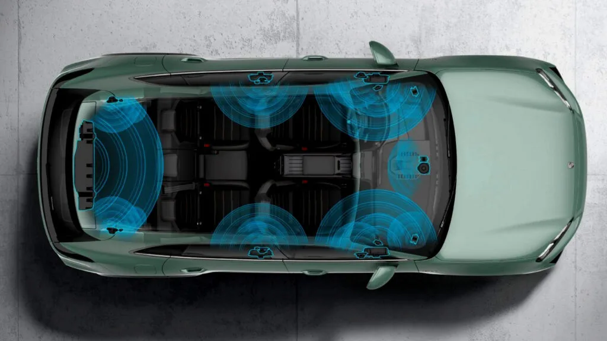
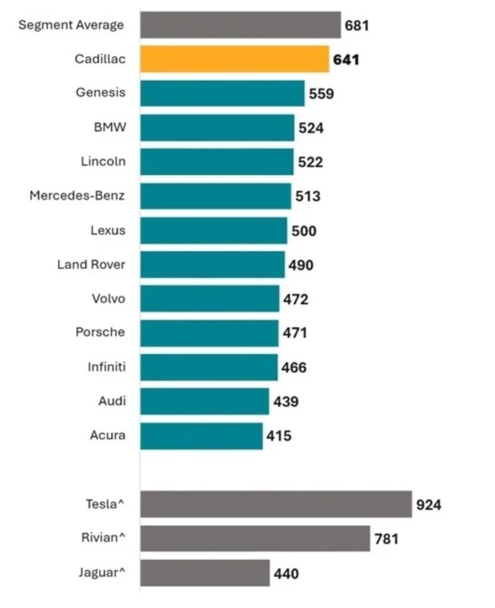
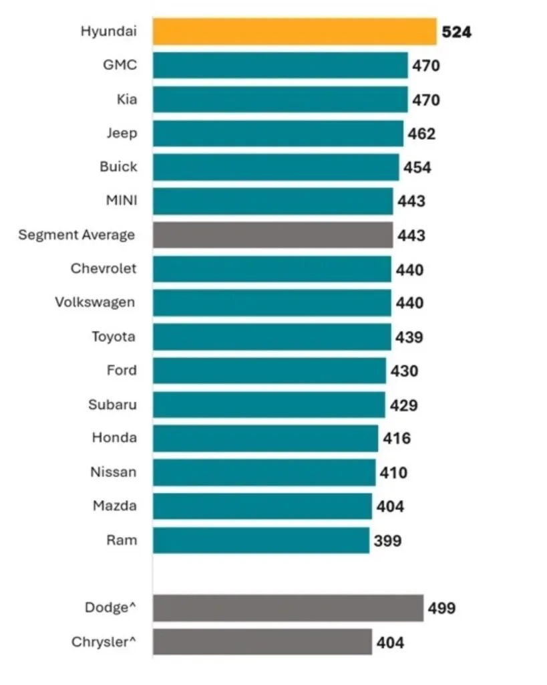

▲ 조수석 디스플레이. 갖춘 차의 소유자 35%는 이 화면을 한 번도 켜지 않았다
신차 실내에서 화면이 늘어나는 속도는 꺾이지 않았습니다. 계기판과 중앙 화면을 넘어 이제는 조수석 앞에도 별도 디스플레이가 붙습니다.
그 화면을 사람들이 실제로 쓰는지 물었더니 답이 이렇게 나왔습니다. 조수석 디스플레이를 갖춘 차의 소유자 가운데 35%가 한 번도 사용하지 않았습니다. 주행할 때마다 쓴다는 응답은 6%였습니다.
1. 화면은 늘었는데 사용률은 낮다
조수석 디스플레이의 명분은 분명합니다. 동승자가 운전자를 방해하지 않고 내비게이션을 조작하거나 영상을 볼 수 있게 한다는 것입니다.

▲ 계기판과 중앙 화면에 더해 조수석 앞까지 화면이 늘어난 실내 ⓒ Carscoops
문제는 전제입니다. 조수석에 사람이 타는 빈도 자체가 높지 않습니다. 출퇴근과 단거리 이동에서는 운전자 혼자 타는 경우가 대부분이고, 그 상태에서 조수석 화면은 켜질 이유가 없습니다.

▲ 한 장으로 이어진 와이드 디스플레이. 면적은 늘었지만 사용률은 별개다 ⓒ Carscoops
고장률도 낮지 않습니다. 조수석 디스플레이의 문제 발생은 100대당 21.3건으로 집계됐습니다. 쓰지도 않는 기능이 불만은 만들고 있다는 뜻입니다.
2. 만족도가 높은 기술의 공통점
반대편을 보면 성격이 뚜렷합니다. 만족도가 가장 높게 나온 기술은 스마트 시동이었고, 문제 발생은 100대당 2.4건에 그쳤습니다. 스마트 공조도 불만이 적은 축에 들었습니다.

▲ 존재를 의식하지 않고 작동하는 기능일수록 만족도가 높게 나왔다 ⓒ Carscoops
이 두 기능의 공통점은 "티가 나지 않는다"는 것입니다. 키를 꺼내지 않아도 시동이 걸리고, 온도를 맞추지 않아도 알아서 조절됩니다. 사용자가 조작법을 새로 배울 필요가 없습니다.
📍 J.D. Power의 진단
J.D. Power의 도론 히크리는 조사 결과를 이렇게 요약했습니다. "고객이 가장 가치 있게 여기는 기술은, 그냥 작동하기 때문에 거의 눈치채지 못하는 기술인 경우가 많다." 화면 크기와 개수를 늘리는 경쟁이 만족도로 직결되지 않는다는 의미입니다.
3. 핸즈프리가 만족도에서 밀렸다
운전자 보조 항목에서 예상 밖의 결과가 나왔습니다. 손을 대고 쓰는 기존 레벨 2 시스템이, 손을 떼도 되는 레벨 2+ 핸즈프리 시스템보다 고객 만족도가 높았습니다.
문제 발생 건수만 보면 반대입니다. 핸즈프리 쪽이 문제는 약간 더 적었습니다. 고장은 덜 나는데 만족은 덜 하는 구조입니다.

▲ 프리미엄 부문 순위. 캐딜락 641점, 제네시스 559점, BMW 524점 순이다 ⓒ J.D. Power
해석의 여지는 있습니다. 핸즈프리 시스템은 사용 조건이 까다롭습니다. 지정된 도로에서만 작동하고, 조건을 벗어나면 운전자에게 제어를 넘깁니다. 기대치는 높은데 쓸 수 있는 구간이 제한적이면 만족도는 떨어집니다.
4. 브랜드 순위 — 현대가 7년 연속
1,000점 만점 기준 브랜드 순위도 함께 공개됐습니다. 프리미엄 부문은 캐딜락이 641점으로 1위였고, 제네시스가 559점으로 뒤를 이었습니다. BMW는 524점이었습니다.

▲ 일반 브랜드 부문. 현대가 524점으로 7년 연속 1위에 올랐다 ⓒ J.D. Power
일반 브랜드 부문 1위는 현대(524점)였습니다. 7년 연속 1위입니다. GMC와 기아가 나란히 470점으로 뒤를 이었습니다.
| 부문 | 순위 | 브랜드 | 점수 |
|---|---|---|---|
| 프리미엄 | 1 | 캐딜락 | 641 |
| 프리미엄 | 2 | 제네시스 | 559 |
| 프리미엄 | 3 | BMW | 524 |
| 일반 | 1 | 현대 | 524 (7년 연속) |
| 일반 | 2 | GMC | 470 |
| 일반 | 2 | 기아 | 470 |
한국 브랜드가 두 부문 상위에 동시에 오른 구조입니다. 프리미엄에서 제네시스가 2위, 일반에서 현대가 1위입니다. 다만 현대의 524점은 프리미엄 3위 BMW와 같은 점수로, 부문별 절대 수준 차이는 크지 않습니다.
5. 이 조사가 시사하는 것
이 조사는 8월 19일 발표됐습니다. J.D. Power는 결과를 요약하며 "차량 내 화면 과부하에 대한 불만이 커지는 가운데, 소유자들은 거의 눈치채지 못하는 기술에 가장 만족한다"고 밝혔습니다.
구매 90일 후에 묻는다는 조사 설계가 핵심입니다. 전시장에서 보고 감탄하는 시점이 아니라, 석 달을 실제로 몰아본 뒤의 평가이기 때문입니다.
그 시점의 답이 "한 번도 안 썼다 35%"라면 결론은 하나입니다. 신차 사양표에서 조수석 디스플레이의 유무를 구매 결정의 중요한 기준으로 두는 것은, 최소한 이 데이터상으로는 근거가 약합니다.
거꾸로 눈여겨볼 항목도 분명해졌습니다. 스마트 시동과 공조처럼 매일 쓰지만 의식하지 않는 기능의 완성도입니다. 시승할 때 화려한 화면보다 이런 기능의 반응 속도를 확인하는 편이 석 달 뒤의 만족도를 더 잘 예측합니다.
정리하면 이렇습니다. 화면이 크고 많은 차가 좋은 차라는 등식은 6만8천 명의 응답 앞에서 성립하지 않았습니다. 잘 만든 기술은 눈에 띄지 않습니다.